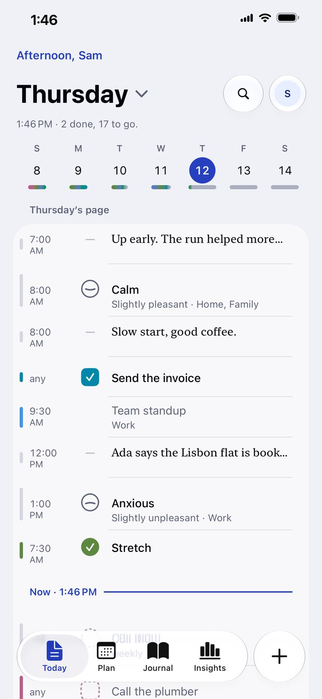
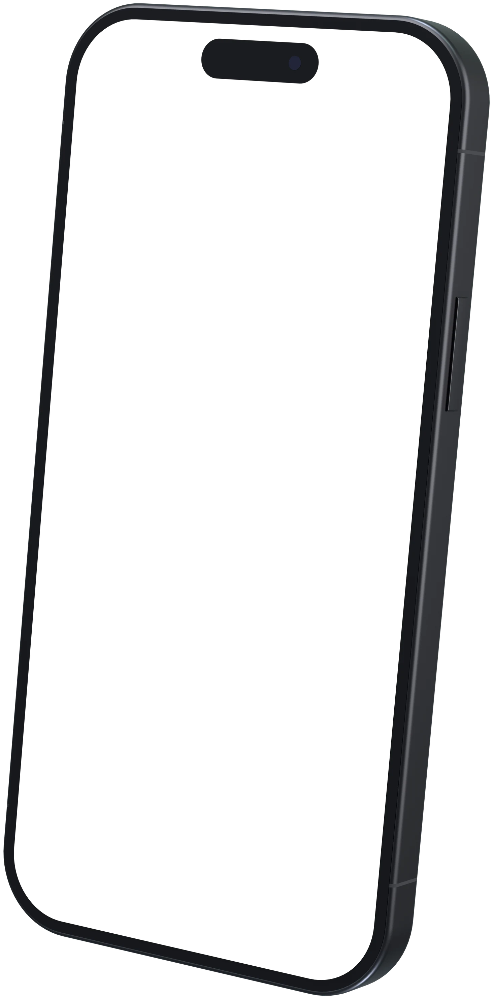
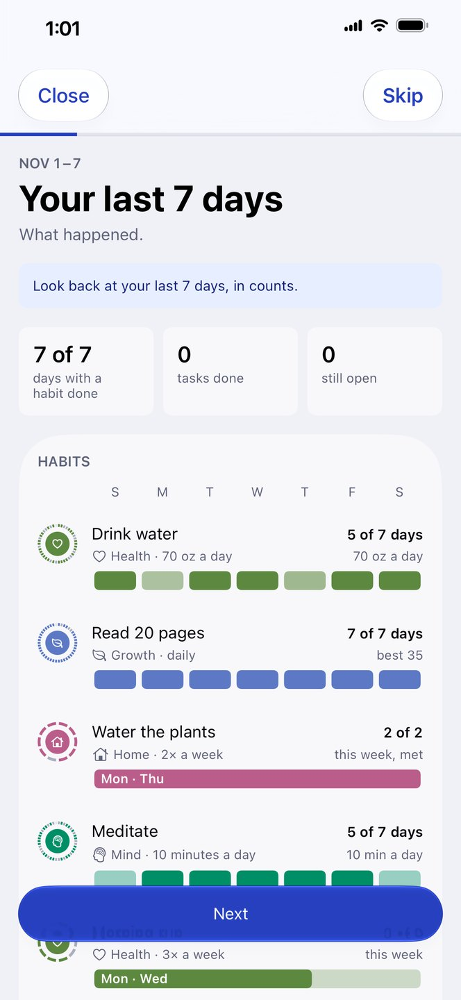
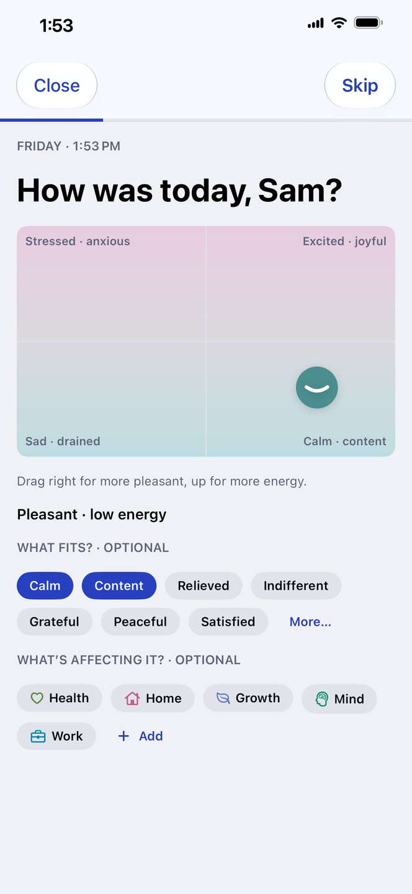
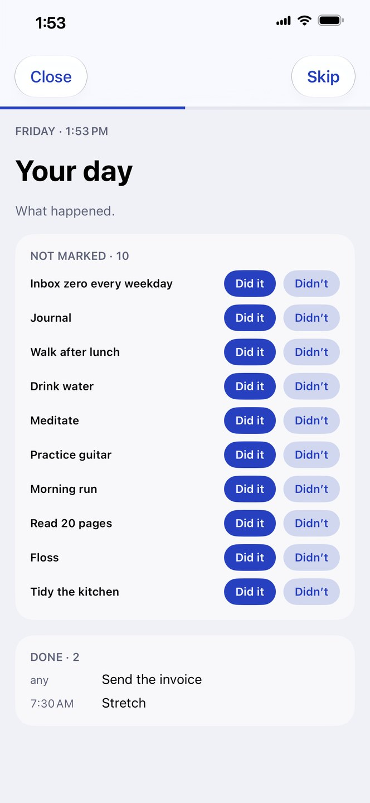
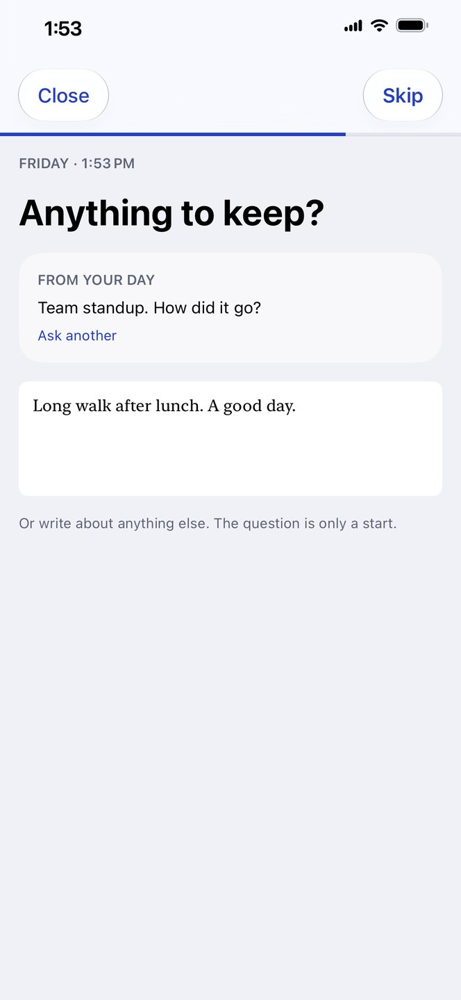
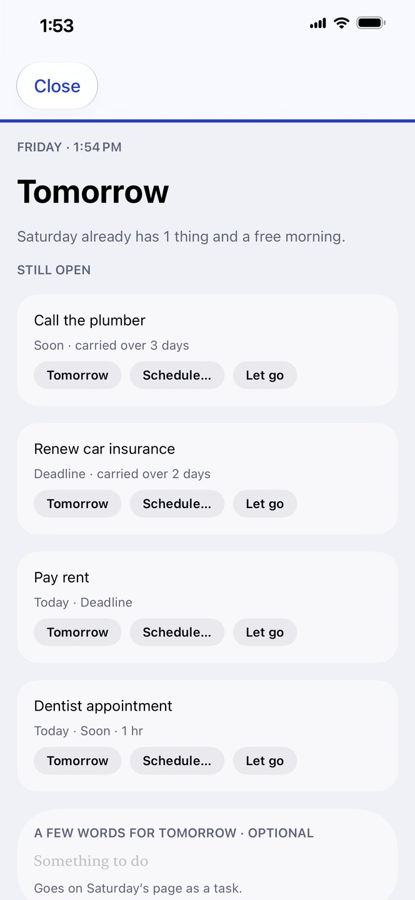
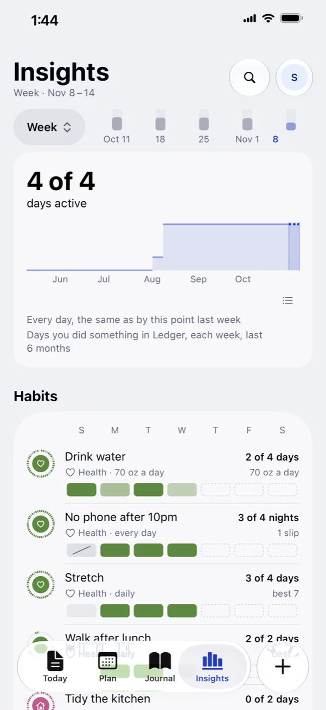
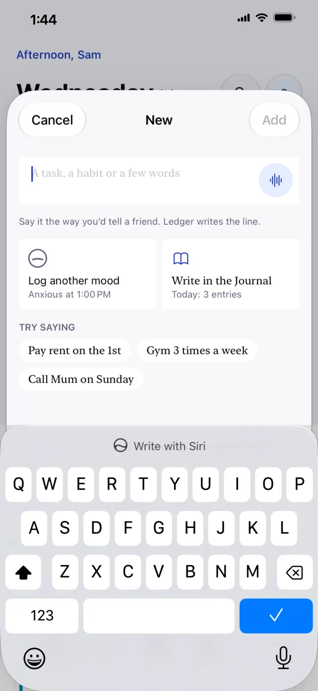

Your day, on one page.
What you do, what you plan, what you write and how you feel, kept together for each day.
On iPhone, iPad, Mac and Apple WatchWorks with Apple Health, Calendar and Siri


Outgrow a habit, Ledger takes it off your page.
Say it in your own words, Ledger detects where it fits.
Name the parts of your life, Ledger shows where your days go.
Works with Siri, say it and it gets done.
Reads your walks and workouts, marks them automatically.
Log how you feel, Ledger surfaces insights over time.
Privacy first, no sign-up, no ads, no tracking.
Ledger is in beta. Come try it.
Free on TestFlight for iPhone, iPad, Mac and Apple Watch.
Join the beta on TestFlightNeeds Apple’s free TestFlight app.
Try Ledger free for two weeks.
Then $29.99 once. No subscription, no account.
On iPhone, iPad, Mac and Apple Watch.
Plan the days ahead.
Get things done.
Reflect on your day.





It keeps track,
not score.
- Plain counts, not scores.Ledger tells you what happened: 4 of 5 this week, 18 of 30 this month. Nothing is rated.
- A missed day is just a blank day.No red marks, and nothing to make up.
- Room for real life.Skip a day when it isn’t happening. Pause a habit while you’re away, and pick it up when you’re back.
Habits you keep,
then outgrow.
- Ledger notices when it has stuck.When you’ve kept a habit up for long enough, Ledger offers to graduate it. You decide.
- It comes off your page.There’s nothing left to mark. Its history stays, and you can bring it back any time.
- Room for the next one.Ledger asks what’s next. It never picks a habit for you.
Your journal,
on the same page.
- It sits with your day.What you write shows on that day’s page, beside what you did and how you felt. Your evening reflection lands here too.
- Write it your way.Type it, write it by hand, or record your voice. Add photos, a drawing or a place.
- Private, and yours.It locks with Face ID, and its words are encrypted end to end. Bring your entries with you from Day One or Apple Journal.
Works with
Apple Health
and Calendar.
- Apple Health fills your habits.Steps, workouts, water, sleep and mindful minutes mark themselves. A mood you log is saved to Health too.
- Your calendar is on the page.Events sit beside your habits and tasks, so the whole day is in one place. Give a task a time and it goes into Calendar.
- Nothing changes without you.Ledger reads only what your habits use, and never moves or edits an event.
Steps fill themselves in
A workout counts
Your calendar, on the page
The same Ledger
on every device.
- Always in step.Mark a line on one device and a moment later it’s marked on the others. It syncs through your own iCloud, with no account to make.
- Made for the bigger screen.On iPad and Mac, Ledger spreads out: a sidebar, more on screen at once, and menus and keyboard shortcuts on the Mac.
- On your wrist, too.Mark a line, turn the Digital Crown to set an amount, or log a mood. Add Ledger to your watch face to see what’s next.
No account. Your devices, your iCloud.
Ledger has no account, no ads and no analytics. Everything stays on your devices and syncs through your own iCloud, which Arca Holdings can’t read, and the words in your Journal are encrypted end to end. Health and Calendar are read on your device.
How Ledger handles your data: Privacy.
Ledger collects nothing about you. What you write stays on your devices and in your own iCloud.
The rest of it.


Try it, then pay once.
Ledger is free to download, with 14 days to try everything. After that, Ledger Lifetime is $29.99, once, with every future feature. There’s no subscription.
If you don’t buy it, what you’ve written stays yours: you can still read and export everything.
- 14 days to try everything first
- iPhone, iPad, Mac and Apple Watch
- Every feature, including future ones
- No subscription and no account
US price. Your local price shows on the App Store.
Download on the App StoreBefore you ask.
Is it a subscription?
No. Ledger is free for 14 days with everything on. After that, Ledger Lifetime is $29.99 once, and it includes future features.
What if I don’t buy it?
What you wrote stays yours: you can still read and export everything.
Which devices does it work on?
iPhone, iPad, Mac and Apple Watch, with iOS, iPadOS, macOS or watchOS 26 or later.
Do I need an account?
No. Ledger uses your iCloud, so there’s nothing to sign up for.
What happens to my data?
The App Store label reads Data Not Collected. Ledger syncs through your own iCloud, which Arca Holdings can’t read, and the words in your Journal are encrypted end to end. Privacy has the details.
Do my moods sync?
Moods stay on the device you log them on. Turn on Save to Health and they’re in Apple Health too.
Can I bring my journal, and take it with me?
Entries from Day One and Apple Journal come in. Export saves everything as a file whenever you like.
Is it in my language?
Ledger is in English and German, and follows your device’s language.
Your day, on one page.
On iPhone, iPad, Mac and Apple Watch. Free for 14 days, then $29.99 once.
Download on the App Store